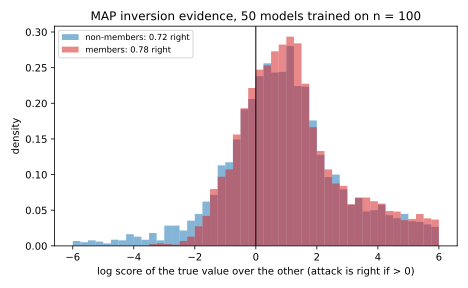
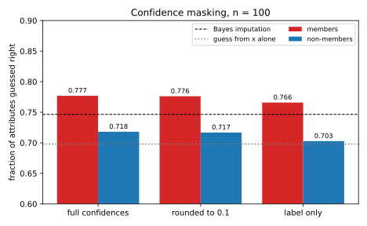

11 Attribute inference and model inversion
A hospital trains a model that predicts whether a patient will develop a lung disease from their age band and whether they smoke, and lets anyone query it. An insurer knows your age and, from a claim, that you have the disease. Can it use the model to find out whether you smoke? It can guess better than without the model, but that alone is not a privacy failure. If smokers get the disease more often, a published study would allow the same guess about everyone with the disease, whether or not their record was used. The question that matters for you is different: does the model reveal more about your attribute because your record was in its training data?
Attribute inference is the attack that recovers one sensitive field of a record, such as smoking status, a genotype or an income band, from the record’s other fields and access to a model. The one idea of this chapter is to compare every such attack with the imputation baseline, the success of a guesser who never sees the model but knows the population’s exact joint distribution of attributes, features and labels. A model trained without your record can teach an attacker only what holds for the population at large. So, as the chapter proves, no attack beats the baseline on records outside the training set. Only on training records can an attack beat it, and that excess is the leak about individuals. The excess compares people in the training set with people outside it, so attribute inference is a membership question in disguise, which ties this chapter to Membership inference.
The running example has two layers. A small smoking table, in which 30% of the population smokes, shows the baseline exactly: the best guess from age and diagnosis is right with probability 0.748, against 0.7 with no observation at all. A toy population with ten numeric features then shows an attack crossing the baseline. Its baseline is 0.7517, and the model inversion attack of Section 11.3, run against a logistic regression trained on 100 of its records, is right on 0.7832 of the training records, above that baseline, but on only 0.7262 of fresh records.
| Symbol | Meaning |
|---|---|
| \(z = (s, x, y)\) | a record: sensitive attribute \(s\), public features \(x\), label \(y\) |
| \(S\), \(X\), \(Y\) | the same three fields of a random record drawn from the population |
| \(\mathcal D\); \(p(s, x, y)\) | the population distribution; the probability (or density) of a record |
| \(D\), \(n\); \(\mathcal T\), \(\theta\) | a training set of \(n\) records; the training algorithm and the model \(\theta = \mathcal T(D)\) |
| \(f_y(x, s)\) | the model’s confidence in label \(y\) at input \((x, s)\) |
| \(b\); \(\hat s\) | the hidden bit of the game of Definition 11.1 (1 for a member); the adversary’s guess of \(s\) |
| \(V(S \mid O)\) | the success probability of the best guess of \(S\) from an observation \(O\), the one most often right |
| \(P_{\mathrm{in}}\), \(P_{\mathrm{out}}\) | the distributions of the pair (target record, model), for a member and for a non-member |
| \(F\); \(h\) | the model’s answers at every candidate \(s\); a function that coarsens them, merging answers that differed, such as rounding |
11.1 The attribute inference game
A claim such as “the attack recovered 78% of smoking statuses” means nothing until you know two more numbers. One is how often the attribute could be guessed without the model. The other is how often the attack succeeds on people outside the training set. This section sets up the game of Yeom et al. (2018), a two-world game like those of Threat models, which measures the second. A challenger flips a coin to decide whether the target comes from the training set or fresh from the population. The coin is not a real-world event, but a way to run both situations under one set of rules. The score subtracts the success on non-members from the success on members, and Section 11.2 proves that this difference is what the model reveals about its training records beyond the population.
Definition 11.1 (The attribute inference game) Fix a training algorithm \(\mathcal T\), a population \(\mathcal D\), a training-set size \(n\) and an adversary \(\mathcal A\). The game has three steps.
- The challenger draws a training set \(D \sim \mathcal D^n\) of \(n\) independent records from the population and trains a model \(\theta = \mathcal T(D)\) on it.
- It draws a hidden bit \(b \in \{0, 1\}\), each value with probability \(\frac12\). If \(b = 1\), it picks the target \(z = (s, x, y)\) uniformly from \(D\), so the target is a member of the training set. If \(b = 0\), it draws \(z \sim \mathcal D\) afresh, so the target is a non-member.
- The adversary receives the target’s public fields and label \((x, y)\), but not \(s\), and access to \(\theta\), either its weights or queries to it. It may also know the population \(\mathcal D\), fully or in part. This auxiliary knowledge is fixed before the game starts, so it is the same in both worlds. It outputs a guess \(\hat s\) of the sensitive attribute.
The attribute advantage of \(\mathcal A\) is its success rate on members minus its success rate on non-members, \[\mathrm{Adv}^{\mathrm{attr}}(\mathcal A) = \Pr[\hat s = s \mid b = 1] - \Pr[\hat s = s \mid b = 0], \tag{11.1}\] where each probability is over everything random in the game.
Any attribute attack can be turned into a membership attack. If the attribute attack is right more often on members, then “the attack was right” is itself evidence of membership. A membership adversary can check this, because the membership game of Membership inference hands it the whole record, sensitive field included. Such an attack has a true positive rate (TPR), the probability that it says “member” for a member, and a false positive rate (FPR), the probability that it says “member” for a non-member. Its advantage is TPR minus FPR.
Membership attacks also have a known ceiling, which the reduction below passes on to every attribute attack. Hypothesis testing proves that no test has an advantage above the total variation distance \(\mathrm{TV}\) between the two distributions it must tell apart. That distance is half the sum over all outcomes of the absolute differences between their two probabilities.
Proposition 11.1 (Attribute advantage is membership advantage) Let \(\mathcal A\) be an adversary in the game of Definition 11.1. Let \(\mathcal B\) be the membership adversary that receives the whole record \(z = (s, x, y)\) and \(\theta\), runs \(\mathcal A\) on \((x, y)\) and \(\theta\), and says “member” exactly when \(\hat s = s\). Then \[\mathrm{TPR}_{\mathcal B} - \mathrm{FPR}_{\mathcal B} = \mathrm{Adv}^{\mathrm{attr}}(\mathcal A). \tag{11.2}\] Write \(P_{\mathrm{in}}\) and \(P_{\mathrm{out}}\) for the distributions of the pair \((z, \theta)\), the target together with the model, over the draw of the training set, the target and the training randomness, when \(z\) is a member and when it is not. Then every adversary satisfies \[\mathrm{Adv}^{\mathrm{attr}}(\mathcal A) \le \mathrm{TV}\big(P_{\mathrm{in}}, P_{\mathrm{out}}\big). \tag{11.3}\]
Proof. The plan is to read off the two rates of \(\mathcal B\), subtract them, and then apply the bound by total variation.
- The membership test fires when the guess is right. \(\mathcal B\) is given \(s\), so it can check whether \(\hat s = s\), and it says “member” on exactly that event.
- Its two rates. The TPR is the probability of “member” when \(b = 1\), and “member” means that the guess was right, so the TPR is \(\Pr[\hat s = s \mid b = 1]\). In the same way, the FPR is \(\Pr[\hat s = s \mid b = 0]\).
- Subtract. TPR minus FPR is then the right-hand side of Equation 11.1, term by term.
- Bound by total variation. \(\mathcal B\) sees exactly the pair \((z, \theta)\), and it runs \(\mathcal A\) with the same auxiliary knowledge in both worlds, so it is a test between \(P_{\mathrm{in}}\) and \(P_{\mathrm{out}}\), randomized by \(\mathcal A\)’s coins. Its advantage is therefore at most \(\mathrm{TV}(P_{\mathrm{in}}, P_{\mathrm{out}})\), and step 3 turns that into Equation 11.3.
The subtraction in Equation 11.1 is what makes the advantage a measure of privacy. Success that comes from knowing the population, such as “people with the disease tend to smoke”, is the same for members and non-members, as Proposition 11.2 below proves, so it cancels. That part still matters to the people attacked, so report the success on members and on non-members as well. The reduction also says that a model with no membership leak has no attribute leak, because \(P_{\mathrm{in}} = P_{\mathrm{out}}\) forces the bound Equation 11.3 to 0. The converse fails. A model whose predictions do not depend on \(s\) gives no attribute attack anything to work with, yet it can still reveal membership through a lower loss on its training records.
The membership test that the reduction builds is a weak one, though. It outputs one bit, so a firing raises the odds of membership by the likelihood ratio TPR/FPR. For an attack that is right on most people, members or not, that ratio is close to 1. To lower its FPR, a test that sees only this bit can only fire on a random share \(r\) of the right guesses, which multiplies both rates by \(r\) and leaves the ratio near 1. At the low FPR where Membership inference judges attacks, the dedicated attacks do much better.
Example 11.1 The toy experiment of this chapter (Section 11.5) has a binary sensitive attribute with prior \(\Pr[s = 1] = 0.3\), ten public features and a binary label. A logistic regression that keeps a separate weight vector for each value of \(s\), and predicts a record’s label with the vector of its \(s\), is trained on \(n = 100\) records, and this is repeated 200 times. Each time, the maximum a posteriori (MAP) inversion attack, which Section 11.3 defines and which queries the model at each candidate value of \(s\), guesses \(s\) for the 100 members and for 100 fresh records. It is right on 0.7832 of members and 0.7262 of non-members. The attribute advantage is their difference, \[\mathrm{Adv}^{\mathrm{attr}} = 0.7832 - 0.7262 \approx 0.0569, \tag{11.4}\] where the last digit comes from the unrounded rates. The standard error of this average over the 200 models is 0.0045.
Read as a membership test, the same attack has TPR 0.7832 at FPR 0.7262, so when it fires, the likelihood ratio is \(0.7832/0.7262 = 1.08\). Its balanced accuracy, the average of its accuracy on members and on non-members, is \(\frac12(\mathrm{TPR} + 1 - \mathrm{FPR}) = \frac12 + \frac12 \times 0.0569 = 0.5285\), hardly better than a coin flip. The attack is right on 0.7262 of people whose records the model never saw, so most of its 78% success would be there even if the person had never been in the training data.
11.2 The imputation baseline
The game removes population inference by subtracting it. This section measures it directly, because it is the part of an attack’s success that any model trained on the same population would give, and so would published statistics. The measure is the success of the best guess of \(s\) from \((x, y)\) by someone who knows the population distribution exactly. Filling in a missing field from the others is imputation, so this is the imputation baseline. Jayaraman & Evans (2022) found that many published attribute inference attacks do no better than imputation fitted on similar data.
The best guess has a simple form. Whatever you answer after an observation is right exactly when the true \(s\) is your answer, so the best answer is the value of \(s\) with the largest joint probability \(p(s, o)\) with that observation, which is also the value with the largest posterior \(p(s \mid o)\). Information theory proves that this MAP guess beats every deterministic guessing rule. A randomized rule picks a deterministic rule with coins independent of the secret, so its success is an average of theirs and never above the best one.
Definition 11.2 (Vulnerability and the imputation baseline) Let \(S\) be a secret and \(O\) an observation with joint probability \(p(s, o)\). The vulnerability of \(S\) given \(O\) is the success of the MAP guess \(\arg\max_s p(s \mid o)\). Since \(p(s, o) = p(o)\,p(s \mid o)\) and the factor \(p(o)\) does not depend on \(s\), it can be summed as the largest joint probability per observation or averaged as the largest posterior: \[V(S \mid O) = \sum_o\max_s p(s, o) = \mathbb E_O\Big[\max_s p(s \mid O)\Big]. \tag{11.5}\] With \(S\), \(X\) and \(Y\) the sensitive attribute, features and label of a record drawn from \(\mathcal D\), the imputation baseline is \(V(S \mid X, Y)\). With no observation, the vulnerability is \(V(S) = \max_s p(s)\).
For continuous features the sum becomes an integral, while the second form, an average over records, covers both cases. For a concrete case, take no observation and a prior of 0.3 on smoking. The rule “always say non-smoker” is right 70% of the time and “always say smoker” 30%, so \(V(S) = 0.7\).
On a non-member, the model was trained without the target, so it should help no more than a coin the adversary flips before guessing. Step 2 of the proof of Theorem 11.1 needs that idea made precise: an observation that is independent of the secret cannot raise the best success.
Lemma 11.1 (An independent observation is useless) If an observation \(U\) is independent of the pair \((S, O)\), then \(V(S \mid O, U) = V(S \mid O)\).
Proof.
- Independence factorizes the joint. Independence means that the probabilities multiply, \(p(s, o, u) = p(s, o)\,p(u)\).
- Pull \(p(u)\) out of the maximum. The factor \(p(u)\) is not negative and does not depend on \(s\), so Definition 11.2 with the observation \((o, u)\) gives \[V(S \mid O, U) = \sum_{o, u}\max_s p(s, o)\,p(u) = \sum_u p(u)\sum_o\max_s p(s, o). \tag{11.6}\]
- The weights add up to one. The inner sum is \(V(S \mid O)\), and the \(p(u)\) sum to 1, so the whole is \(V(S \mid O)\).
The lemma turns the model into a useless observation for a fresh target. The best any adversary can do on a non-member is then the best guess from \((x, y)\) alone, which gives the non-member ceiling.
Theorem 11.1 (The non-member ceiling) For every adversary in the game of Definition 11.1, the success on non-members is at most the imputation baseline: \[\Pr[\hat s = s \mid b = 0] \le V(S \mid X, Y) = \sum_{x, y}\max_s p(s, x, y). \tag{11.7}\] The bound also holds for an adversary that sees the whole training set \(D\) instead of the model, so even publishing the training data reveals nothing about outsiders beyond the population.
Proof.
- A non-member is independent of the model. When \(b = 0\), the target \(z\) is drawn afresh, separately from \(D\). The model depends only on \(D\) and the randomness of training, so \(\theta\) is independent of \(z = (s, x, y)\), and so is \(D\) itself. The adversary’s auxiliary knowledge and its own coins are fixed before the target is drawn, so they are independent of \(z\) too.
- So the model is a useless observation. Lemma 11.1 with \(O = (X, Y)\) and \(U = \theta\) (or \(U = D\)) gives \(V(S \mid X, Y, \theta) = V(S \mid X, Y)\).
- No rule beats the MAP guess. The adversary’s rule is a function of \((x, y, \theta)\), possibly randomized. By the optimality of the MAP guess, recalled before Definition 11.2, its success is at most the vulnerability given that observation, which step 2 showed is \(V(S \mid X, Y)\).
The next result is about attacks that never look at the model, on both kinds of target. Ignoring the model, a training record drawn from the population looks exactly like a fresh draw, so such an attack cannot tell the two worlds apart.
Proposition 11.2 (Model-free attacks have zero advantage) If the guess \(\hat s = g(x, y)\) depends on \((x, y)\) only, and not on \(\theta\), then \(\Pr[\hat s = s \mid b = 1] = \Pr[\hat s = s \mid b = 0]\). The Bayes imputation guess \(\arg\max_s p(s \mid x, y)\), which is the MAP guess of Definition 11.2 under the true population, has success exactly \(V(S \mid X, Y)\) in both worlds, so it attains the ceiling Equation 11.7 on non-members.
Proof.
- A member is a population record. \(D\) consists of \(n\) independent draws from \(\mathcal D\), and the target is one of them, chosen uniformly at random. Whichever one is chosen was drawn from \(\mathcal D\), so on its own, ignoring the model, the target has distribution \(\mathcal D\), the same as a fresh draw.
- A rule that ignores \(\theta\) sees one distribution. Its success is \(\Pr[g(X, Y) = S]\) for a record drawn from \(\mathcal D\) in either world, so the two terms of Equation 11.1 are equal and the advantage is 0.
- Imputation reaches the ceiling. With \(g\) the MAP guess under \(\mathcal D\), this common success is \(V(S \mid X, Y)\) by Definition 11.2.
On non-members, then, the model only teaches the population. An adversary who does not know \(\mathcal D\) can learn it from the model, and so raise its success on non-members towards \(V(S \mid X, Y)\), but no further. Dwork & Roth (2014, §1) make the same point with smoking: a study that shows smoking causes cancer lets an insurer infer more about any smoker, whether or not that smoker took part. The study disclosed a fact about the world, not about its participants, and a privacy definition that forbade this would forbid learning anything from data.
That does not make population inference harmless, since being guessed to be a smoker hurts whether or not the guess used your record. But no protection that limits what one record can change, such as differential privacy in Part 3, can prevent it, because the harm would be there with your record removed. The ceiling is a property of the population, and it can be high: if \(x\) and \(y\) nearly determine \(s\), every statistic about the population “reveals” \(s\). So report attacks relative to it.
Example 11.2 Let \(s = 1\) mean “smoker”, \(x\) the age band (young or old) and \(y = 1\) “has the disease”. The population has \(\Pr[s = 1] = 0.3\). Among non-smokers a fraction \(\Pr[\text{old} \mid s = 0] = 0.4\) is old, and among smokers a fraction \(0.6\). The disease probabilities \(\Pr[y = 1 \mid x, s]\) are 0.1 (young non-smoker), 0.3 (old non-smoker), 0.4 (young smoker) and 0.7 (old smoker). The probability of a full record is the chance of the smoking status, times the chance of the age band given it, times the chance of the disease outcome given both. Multiplying gives the joint table, Table 11.2. For example, \(p(\text{smoker}, \text{old}, \text{disease}) = 0.3 \times 0.6 \times 0.7 = 0.126\), and \(p(\text{non-smoker}, \text{young}, \text{no disease}) = 0.7 \times 0.6 \times 0.9 = 0.378\).
| \(p(s, x, y)\) | young, no disease | young, disease | old, no disease | old, disease |
|---|---|---|---|---|
| non-smoker (\(s = 0\)) | 0.378 | 0.042 | 0.196 | 0.084 |
| smoker (\(s = 1\)) | 0.072 | 0.048 | 0.054 | 0.126 |
| \(\Pr[\text{smoker} \mid x, y]\) | 0.1600 | 0.5333 | 0.2160 | 0.6000 |
The last row is each column’s smoker entry divided by the column total. For young people with the disease, it is \(0.048/(0.042 + 0.048) = 0.5333\). Now watch the best guess improve as the guesser sees more.
With no observation, the best guess is “non-smoker”, right with probability \(V(S) = 0.7\).
With age alone, the guesser adds the two disease columns of each age band. The two disease probabilities add to 1, so each sum is the prior times the age probability. Young smokers have probability \(0.3 \times 0.4 = 0.12\) and young non-smokers \(0.7 \times 0.6 = 0.42\), so a young person is a smoker with probability \(0.12/0.54 = 0.2222\). Old smokers have \(0.3 \times 0.6 = 0.18\) and old non-smokers \(0.7 \times 0.4 = 0.28\), so an old person is a smoker with probability \(0.18/0.46 = 0.3913\). Both are below \(\frac12\), so the guess stays “non-smoker” in both age bands and \(V(S \mid X) = 0.7\). Age changes the odds but never the decision, so it adds nothing to the success.
With age and disease, the posterior crosses \(\frac12\) in the two disease columns (Figure 11.1), so the MAP guess becomes “smoker” there. The success is the sum of the largest entry in each column, the bold ones, so \(V(S \mid X, Y) = 0.378 + 0.048 + 0.196 + 0.126 = 0.748\). The entry a guess misses in each column is the one not in bold, and the largest of these is the 0.084 of old non-smokers with the disease.
The min-entropy leakage of Information theory turns this gain into bits: it is the base-2 logarithm of how many times more likely the best guess is to succeed with the observation than without. Here it is \(\log_2(0.748/0.7) = 0.0957\) bits.
Every one of these numbers comes from the population. A model that predicts well lets an insurer reach 0.748 on anyone drawn from it, and by Equation 11.7 nobody outside the training set can be attacked more successfully than that.

11.3 Model inversion
The imputation baseline assumes a guesser who knows the population exactly. A real adversary usually does not know \(p(y \mid x, s)\), the link between the label and the sensitive attribute, which Bayes’ rule needs to compute the posterior of \(s\). But a model that predicts \(y\) from \(x\) and \(s\) estimates exactly that link. Fredrikson et al. (2014) used this on a linear model that predicted the dose of the drug warfarin from demographics and two genetic markers, to infer a patient’s genotype from their demographics and dose. They called the attack model inversion, running the model “backwards” from its output to an input. This section states the attack as Bayes’ rule and shows when it is no more than imputation.
By Bayes’ rule, written out in the proof of Proposition 11.3, the best value of \(s\) has the largest product of two factors. The first is how plausible \(s\) is for someone with these features, and the second is how likely the observed label is if the attribute were \(s\). The adversary supplies the first from what it knows about the population. It gets the second by querying the model at each candidate \(s\). Fredrikson, Jha & Ristenpart (2015) showed that confidences, the predicted probability of each label, make this much more effective, because a confidence says how likely the label is under each candidate, not just which label wins.
Definition 11.3 (MAP model inversion) Let \(p(s \mid x)\) be what the adversary knows about how \(s\) relates to the public features, and let \(f_y(x, s)\) be the model’s confidence in the observed label \(y\) when it is fed the candidate \(s\). The MAP inversion attack guesses \[\hat s_{\mathrm{inv}}(x, y) = \arg\max_s\; p(s \mid x)\, f_y(x, s). \tag{11.8}\]
Fredrikson et al. (2014) used the marginal \(p(s)\) in place of \(p(s \mid x)\), which treats \(s\) as independent of \(x\). With a perfect model, the score \(p(s)\,p(y \mid x, s)\) is then a rule on \((x, y)\) that differs from the MAP guess whenever \(x\) carries evidence about \(s\). By the optimality of the MAP guess, it can only lose success.
Even with \(p(s \mid x)\), a perfect model gives the attack nothing beyond imputation. Call a model calibrated if its confidences are exactly the population’s probabilities, so that the second factor is the true likelihood. That is a stronger demand than the usual meaning, that among inputs given confidence 0.7 about 70% have the label. For a calibrated model the attack is the imputation guess.
Proposition 11.3 (For a calibrated model, inversion is imputation) Suppose the adversary’s \(p(s \mid x)\) is the population’s, and that for every training set the model satisfies \(f_y(x, s) = p(y \mid x, s)\) for all \(s\), \(x\) and \(y\), so that its answers do not depend on which records it was trained on. Then \(\hat s_{\mathrm{inv}}\) is the Bayes imputation guess of Proposition 11.2. Its success is \(V(S \mid X, Y)\) on members and non-members alike.
Proof. The plan is to write the posterior of \(s\) by Bayes’ rule, drop the factor that does not depend on \(s\), substitute the model, and then apply the result on model-free attacks.
- Bayes’ rule. The joint probability of \(s\) and \(y\) given \(x\) can be built in two stages, first \(s\) from \(x\) and then \(y\) from both, so \(p(s, y \mid x) = p(s \mid x)\,p(y \mid x, s)\). Dividing by \(p(y \mid x)\) turns it into the posterior of \(s\): \[p(s \mid x, y) = \frac{p(s \mid x)\,p(y \mid x, s)}{p(y \mid x)}. \tag{11.9}\]
- The denominator does not depend on \(s\). It is the same number for every candidate, so it cannot change which candidate is largest. The MAP guess is therefore \(\arg\max_s p(s \mid x)\,p(y \mid x, s)\).
- Plug in the model. Replacing the unknown \(p(y \mid x, s)\) by the model’s estimate \(f_y(x, s)\) gives Equation 11.8. For a calibrated model the replacement changes nothing, so \(\hat s_{\mathrm{inv}}\) is the MAP guess, with success \(V(S \mid X, Y)\).
- Members and non-members. The guess uses \(\theta\) only through answers that are the same for every training set, so it is a fixed function of \((x, y)\). It is a model-free attack, so Proposition 11.2 gives equal success in both worlds.
So everything the attack does well or badly comes from how the model’s \(f_y(x, s)\) differs from the population’s \(p(y \mid x, s)\), and the difference helps the attack on members and hurts it on non-members. On members, the model is too sure of the truth. Training lowers the log-loss \(-\ln f_y(x, s)\) on each training record at its true \(s\), which pushes \(f_y(x, s)\) up towards 1. The other value \(s'\) was never paired with this record in training, so \(f_y(x, s')\) stays closer to an honest prediction. (In the toy model the record never touches the weights used at \(s'\), because each value of \(s\) has its own weight vector.) So the ratio \(f_y(x, s)/f_y(x, s')\) that decides the attack is tilted towards the truth for members. This is the generalization gap of Membership inference seen through the sensitive attribute.
On non-members, an overfit model does worse than imputation. Its confidences carry the noise of a small training set, so on some records its guess differs from the imputation guess, and by Theorem 11.1 no departure from imputation can win on average. More data closes both gaps. As \(n\) grows, a correctly specified model, one whose family contains the population’s \(p(y \mid x, s)\), approaches \(p(y \mid x, s)\), and both success rates approach \(V(S \mid X, Y)\) (Figure 11.3; Section G.6 shows why the fit converges).
Example 11.3 Start with a calibrated model on the smoking table, and take an old patient with the disease. From Example 11.2, the adversary knows \(\Pr[\text{smoker} \mid \text{old}] = 0.3913\), so \(\Pr[\text{non-smoker} \mid \text{old}] = 1 - 0.3913 = 0.6087\). It queries the model at both values of \(s\), and a calibrated model returns the population’s disease probabilities, \(f_1(\text{old}, \text{smoker}) = 0.7\) and \(f_1(\text{old}, \text{non-smoker}) = 0.3\). The scores of Equation 11.8 are \(0.3913 \times 0.7 = 0.2739\) for “smoker” and \(0.6087 \times 0.3 = 0.1826\) for “non-smoker”, so it guesses “smoker”. Dividing the smoker score by the sum of the two restores the normalization that step 2 of the proof dropped, and gives \(0.2739/(0.2739 + 0.1826) = 0.6000\), the posterior of Table 11.2. The attack is imputation.
The toy model shows what a trained model changes. Its population draws \(s\) with \(\Pr[s = 1] = 0.3\) and ten standard normal features, the first shifted by 0.5 when \(s = 1\). The label follows a logistic model with a different, fixed weight vector for each value of \(s\), listed in the script. Guessing from \(x\) alone is right 0.7045 of the time, and Bayes imputation, which knows the true logistic weights, is right 0.7517 of the time, both measured on a million fresh records. In the 200 games with \(n = 100\), imputation, which never looks at the models, is right on 0.7508 of the members and 0.7555 of the non-members. The difference, \(-0.0046\), is about one standard error of that difference from zero, as Proposition 11.2 predicts, and the 0.7555 on non-members sits above the ceiling of 0.7517 only by the same sampling noise.
The trained models overfit, with a mean log-loss of 0.2965 on members and 0.6690 on non-members. MAP inversion, given the population’s \(p(s \mid x)\) and the trained models’ confidences, is right on 0.7832 of members, \(0.7832 - 0.7517 = 0.0315\) above the imputation ceiling, and on 0.7262 of non-members, 0.0254 below it (computed before rounding). No population-level knowledge could produce the success above the ceiling, since the ceiling is the best that perfect population knowledge achieves.
Figure 11.2, from a separate run of 50 models, shows where the excess on members comes from. It plots the attack’s evidence for the true value \(s\) over the other value \(s'\), the log of the ratio of their two scores, \(\ln\frac{p(s \mid x)f_y(x, s)}{p(s' \mid x)f_y(x, s')}\). The attack is right when this is positive. For members the distribution has a thinner left tail, because training has removed most of the cases where the model strongly prefers the wrong value.
Figure 11.3 repeats the game for training sets from 25 to 1600 records. At \(n = 25\) the attack is right on 0.8420 of members and 0.6810 of non-members, an advantage of \(0.8420 - 0.6810 = 0.1610\). At \(n = 400\) the advantage is 0.0111, and at \(n = 1600\) it is 0.0052.


The same idea can invert a whole input. Fredrikson, Jha & Ristenpart (2015) followed the gradient of one class’s confidence in a face recognition model, where each class is one person, and obtained a recognizable, blurred image of that person. By this chapter’s measure that is population inference about the class, but the class is a single person and its population is that person’s photos.
11.4 Confidence masking
If confidences make inversion stronger, why release them? Fredrikson, Jha & Ristenpart (2015) suggested rounding the confidences an interface returns, and many deployed interfaces return only the top label. Such confidence masking is cheap and leaves the predicted label unchanged. This section shows that masking can never help the best attacker, but that it need not shrink the gap between members and non-members.
Masking only coarsens what the adversary sees. The proof of Proposition 11.4 below needs the fact that the best guess from a processed observation is no better than the best guess from the observation itself.
Lemma 11.2 (Processing cannot help the best guesser) Let \(h\) be any function of an observation \(O\), possibly randomized with randomness independent of \((S, O)\). Then \(V\big(S \mid h(O)\big) \le V(S \mid O)\).
This is the simulation of Lemma 9.1, the data-processing inequality (Theorem 3.5) seen from the guesser’s side. Whoever sees \(o\) can compute \(h(o)\) itself, so every rule on \(h(O)\) is a rule on \(O\), and none of those beats the MAP guess.
To apply the lemma to masking, write \(f(x, s)\), without a label subscript, for the model’s whole vector of confidences over the labels at input \((x, s)\), whose entry for label \(y\) is \(f_y(x, s)\). Let \(F = \big(f(x, s)\big)_s\) be the list of these vectors that the adversary gets by querying the model at every candidate value of \(s\).
Proposition 11.4 (Masking cannot help the best attacker) Let \(h\) be any masking function applied to the answers \(F\), such as rounding, keeping only the top label or adding noise. In each world of the game separately, with \(V\) computed under that world’s joint distribution of the target and the model rather than under the population alone, the best attack on the masked answers does no better than the best attack on the full ones: \[V\big(S \mid X, Y, h(F)\big) \le V\big(S \mid X, Y, F\big). \tag{11.10}\]
Proof.
- A masked observation is a processed one. Anyone holding the full answers can apply the mask themselves, so \((x, y, h(F))\) is computed from \((x, y, F)\).
- Apply the lemma. Lemma 11.2 with \(O = (X, Y, F)\) and the processing \((x, y, F) \mapsto (x, y, h(F))\) gives Equation 11.10. The argument never used which world the target came from, so it holds for \(b = 0\) and for \(b = 1\) separately.
The inequality says nothing about the difference between the two worlds, and labels alone still leak, because a label can still be checked at each candidate. With only the top label, the confidence factor of Equation 11.8 becomes 1 when the predicted label at \(s\) equals the known label \(y\) and 0 otherwise. On a member, the model usually predicts the training label at the true \(s\), because it fit that record, while at the other value its honest prediction matches \(y\) less often. So a label that matches at only one candidate points to that candidate, and on members it usually points to the truth. A non-member’s two predicted labels usually agree, so the factors are equal and the prior \(p(s \mid x)\) alone decides. This asymmetry, which label-only membership inference (Choquette-Choo et al. 2021) also exploits, is why masking hurts the population inference more than the individual leak.
Masking lowers the success in both worlds by amounts that depend on \(h\), and nothing forces the two drops to be equal, so the gap need not shrink. Example 11.4 shows it growing. Equation 11.10 is about the optimal attacker, and MAP inversion with an overfit model is not optimal, so a particular mask can even raise its success slightly. Above all, masking is obfuscation, not a guarantee: it removes one attack’s input without bounding what any attack can learn about a member. Part 3 introduces differential privacy, which bounds the difference between members and non-members for every attacker and every output format.
Example 11.4 The same 200 models as in Example 11.3, attacked through three interfaces, give Table 11.3 and Figure 11.4.
| Interface | Members | Non-members | Advantage |
|---|---|---|---|
| Full confidences | 0.7832 | 0.7262 | 0.0569 |
| Confidences rounded to one decimal | 0.7836 | 0.7253 | 0.0583 |
| Top label only | 0.7741 | 0.7092 | 0.0650 |
Rounding to one decimal changes almost nothing, because the attack only compares the scores of the two candidates, and most comparisons keep their sign. With labels only, non-member success drops from 0.7262 to 0.7092, close to the 0.7045 of guessing from \(x\) alone. Member success drops less, to 0.7741, still \(0.7741 - 0.7517 = 0.0224\) above the imputation ceiling. So the advantage grows, from 0.0569 to 0.0650: the interface leaks less about the population, while members are still guessed well above what the population allows.

11.5 Code
The script code/attribute_inference.py computes every number in this chapter and draws every figure. It works out the smoking table exactly. For the toy model it samples the population and trains a ridge-regularized logistic regression with one weight vector per value of \(s\) by Newton’s method. It then plays the game, attacking the \(n\) members and \(n\) fresh non-members of each model with MAP inversion, Bayes imputation and the guess from \(x\) alone. From the repository root:
uv run python code/part02-attacks/attribute_inference.py| Experiment | Result |
|---|---|
| Smoking table | \(V(S) = 0.7000\); \(V(S \mid X) = 0.7000\); \(V(S \mid X, Y) = 0.7480\); leakage 0.0957 bits; posteriors 0.1600, 0.5333, 0.2160, 0.6000 |
| Toy population, \(10^6\) fresh records | Guess from \(x\) alone 0.7045; Bayes imputation 0.7517 |
| Game, \(n = 100\), 200 models: mean log-loss | Members 0.2965; non-members 0.6690; gap 0.3725 |
| Guess from \(x\) alone | Members 0.7017; non-members 0.7089 |
| Bayes imputation | Members 0.7508; non-members 0.7555; advantage \(-0.0046\) |
| MAP inversion | Members 0.7832; non-members 0.7262; advantage 0.0569 (standard error 0.0045) |
| MAP inversion against the ceiling | Members \(+0.0315\); non-members \(-0.0254\) |
| As a membership test | TPR 0.7832; FPR 0.7262; balanced accuracy 0.5285 |
| Masking | Rounded: 0.7836 / 0.7253, advantage 0.0583. Label only: 0.7741 / 0.7092, advantage 0.0650 |
| Training-set size, 40 models each | \(n = 25\): 0.8420 / 0.6810. \(n = 400\): 0.7611 / 0.7500. \(n = 1600\): 0.7550 / 0.7497 |
tests/test_attribute_inference.py checks that the output still matches.
11.6 Summary
| Result | Statement | Use |
|---|---|---|
| Definition 11.1 | Attribute advantage = success on members \(-\) success on non-members, Equation 11.1 | Report both rates and the imputation baseline; a single success rate says nothing about privacy |
| Proposition 11.1 | Fire when \(\hat s = s\): TPR \(-\) FPR \(=\) attribute advantage \(\le \mathrm{TV}(P_{\mathrm{in}}, P_{\mathrm{out}})\) | No membership leak means no attribute leak; an attribute attack is a one-bit membership test, weak at low FPR |
| Definition 11.2 | \(V(S \mid O) = \sum_o\max_s p(s, o)\), the success of the MAP guess | The baseline every attribute attack is measured against |
| Lemma 11.1 | An observation independent of \((S, O)\) leaves \(V(S \mid O)\) unchanged | The non-member ceiling |
| Theorem 11.1 | Success on non-members \(\le V(S \mid X, Y)\) | Success up to the baseline is population inference, which any model or statistic of the population gives |
| Proposition 11.2 | Attacks that ignore the model succeed equally on members and non-members | Imputation shows no advantage; use it to check an experiment |
| Definition 11.3, Proposition 11.3 | \(\hat s = \arg\max_s p(s \mid x)\,f_y(x, s)\); for a calibrated model it is imputation | In the toy, success on members beyond non-members comes from overfitting and shrinks as the training set grows (Figure 11.3) |
| Lemma 11.2, Proposition 11.4 | \(V(S \mid X, Y, h(F)) \le V(S \mid X, Y, F)\), but the gap between members and non-members can grow | Rounding confidences or returning labels only changes the attacks, not the fact that the model fits its training records more closely than fresh ones |
11.7 References
- Yeom, Giacomelli, Fredrikson & Jha, “Privacy Risk in Machine Learning: Analyzing the Connection to Overfitting” (IEEE CSF 2018). The attribute inference game with members and non-members, its advantage, the reduction between attribute and membership advantage, and the link to the generalization gap.
- Fredrikson, Lantz, Jha, Lin, Page & Ristenpart, “Privacy in Pharmacogenetics: An End-to-End Case Study of Personalized Warfarin Dosing” (USENIX Security 2014). The first model inversion attack: inferring genetic markers from a dosing model and a patient’s demographics and dose.
- Fredrikson, Jha & Ristenpart, “Model Inversion Attacks that Exploit Confidence Information and Basic Countermeasures” (CCS 2015). Inversion from confidences for decision trees and for face recognition, and rounding as a countermeasure.
- Wu, Fredrikson, Jha & Naughton, “A Methodology for Formalizing Model-Inversion Attacks” (IEEE CSF 2016). Model inversion as a game, with the distinction between what a model reveals about its training data and about the population.
- Jayaraman & Evans, “Are Attribute Inference Attacks Just Imputation?” (CCS 2022). The imputation baseline made central: many attacks do no better, and what it takes to beat it.
- Choquette-Choo, Tramèr, Carlini & Papernot, “Label-Only Membership Inference Attacks” (ICML 2021). Why returning only labels does not stop inference about members.
- Salem, Cherubin, Evans, Köpf, Paverd, Suri, Tople & Zanella-Béguelin, “SoK: Let the Privacy Games Begin! A Unified Treatment of Data Inference Privacy in Machine Learning” (IEEE S&P 2023). Attribute inference among the other privacy games, with their relationships.
- Dwork & Roth, The Algorithmic Foundations of Differential Privacy (2014), §1. The smoking example and why learning about the population is not a privacy breach of the individual.